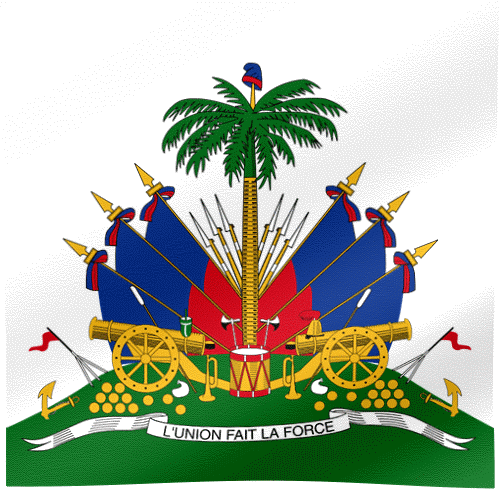

Ministere
Du
Tourisme haitien

BIENVENUE

"Les effets conjugués de la croissance économique, de la pression
démographique, du développement du tourisme accentuent, d'année en année, les menaces qui pèsent sur l'avenir même de l'homme,"
De Conne Lepage
Bienvenue sur notre site dédié à la découverte des trésors cachés d'Haïti ! Nous sommes ravis de vous accueillir dans un voyage virtuel à travers les joyaux touristiques du Nord, du Sud et de la partie centrale du pays. Découvrez des informations détaillées sur notre site emblématique, imprégnez-vous de la richesse de notre culture, plongez dans nos traditions authentiques et laissez-vous séduire par notre cuisine exceptionnelle. Que vous soyez déjà en quête de votre prochaine destination en Haïti ou que vous soyez simplement curieux, soyez assuré que ce site est votre guide parfait. Nous vous invitons à choisir Haïti comme votre prochaine aventure, où chaque moment sera une expérience extraordinaire. Faites-nous confiance pour vous guider vers des découvertes inoubliables. Préparez-vous à vivre des moments exceptionnels dans cette terre bénie. Nous vous souhaitons d'avance un séjour des plus agréables, riche en souvenirs et en émotions !